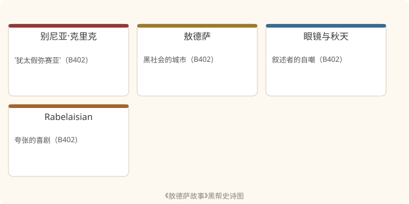

敖德萨故事
一、基本信息
| 作者 | 伊萨克·巴别尔 |
|---|---|
| 成书/出版 | 1931年（Britannica B402：Tales of Odessa (1931)——敖德萨犹太黑社会——首篇'The King' 1921-06-23 Moryak 刊） Isaac Babel — Encyclopaedia Britannica（百科全书） |
| 国别/地区 | 俄国 |
| 时代 | 近代 · 20世纪20-30年代 |
| 体裁 | 短篇集 |
| 语言 | 俄语 |

《敖德萨故事》黑帮史诗图（主题·结构图）
二、创作背景
Britannica（B402）：Tales of Odessa——敖德萨犹太黑社会——Benya Krik——'a mock Jewish messiah'（犹太假弥赛亚）——Rabelaisian 故事兼'闯入'俄国文学的寓言。
Britannica（B402）：叙述者'with spectacles on his nose and autumn in his heart'（鼻子上架着眼镜、心里装着秋天）。
Britannica（B402）：1927年电影 Benya Krik——巴别尔出售剧本——自认失败——被禁一年。
三、内容脉络
（通说待核——B402未载篇目细节）'王'别尼亚·克里克的敖德萨黑帮故事。
（通说待核）'如何在大敖德萨成为老者'等篇（篇名通说待核）。
四、主要人物表
| 人物 | 身份 | 说明 |
|---|---|---|
| 别尼亚·克里克 | '犹太假弥赛亚'/黑帮王 | （B402：Benya Krik——'a mock Jewish messiah'） |
| 眼镜少年 | 叙述者 | （B402：with spectacles on his nose and autumn in his heart） |
五、主题与艺术特点
- '犹太假弥赛亚'的黑帮史诗（B402）。
- 'Rabelaisian'的夸张喜剧（B402：Rabelaisian stories）。
- '闯入'俄国文学的寓言（B402：allegory of Babel muscling in）。
六、影响与评论
- Britannica：'a mock Jewish messiah'（B402）。
Isaac Babel — Encyclopaedia Britannica（百科全书） - Britannica：1927年电影被禁一年（B402）。
Isaac Babel — Encyclopaedia Britannica（百科全书）
七、阅读建议
难点
- 敖德萨犹太黑话。
- 'Rabelaisian'的夸张。
- 《敖德萨故事》中译本（人民文学等——通说待核）。
- 俄文原版。
巴别尔第二篇；与《骑兵军》对读。
八、待核实
- 别尼亚·克里克人名核对（B402已载）。
- 1931年出版细节待核。
- 1927年电影禁映细节待核（B402口径）。